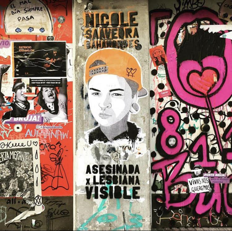
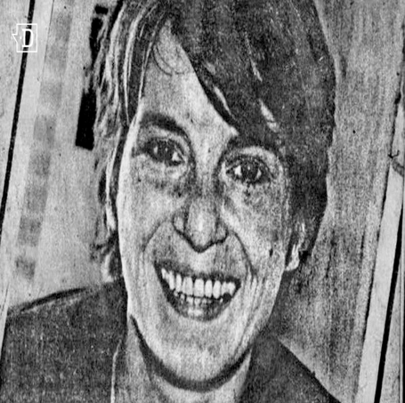

Crímenes de odio en Chile: Lesbofobia tras los homicidios de Nicole Saavedra y Mónica Briones
Casos que nadie querría que ocurrieran, pero que lamentablemente están en el recuerdo de todos. En Chile, así como en el resto del mundo, nos encontramos con homicidios que ejemplifican la homofobia en su peor expresión. Los casos que te mostramos a continuación son sólo un par de los muchos que se han dado en el país, y que reflejan cómo el patriarcado viola, tortura y mata
Nicole Saavedra y la desidia del sistema de justicia criminal
Nicole Saavedra tenía 23 años y estaba cerca de terminar su carrera como técnico en prevención de riesgo industrial. Vivía en la pequeña comunidad de El Melón junto a su madre, era lesbiana, “camiona” como ella misma se definía. No tenía problemas en vivir y expresar su identidad de género, cuestión que finalmente le terminaría costando la vida. Lo último que se sabe de Nicole es que fue a una fiesta en Quillota el viernes 17 de junio de 2016. Su perfil en Instagram registra sus últimas actividades, se la escucha reír, junto a amigos a los que grabó sentados en colchonetas. A las 7 de la mañana del sábado 18 de junio, mandó un mensaje de voz a su mamá para avisar que ya iba en camino a su casa. Nunca llegó. Su cuerpo fue encontrado una semana después en un sitio eriazo, maniatado, semidesnudo y con signos de haber sido torturado. Pero Nicole no sólo fue víctima del ataque lesbofóbico de su homicida, también fue atacada por las negligencias de una investigación que pasó por tres fiscales distintos, que no tuvo resultados en 4 años, y que sólo logró avances producto de la presión que sobre el Ministerio Público ejercieron su familia y colectivos de activistas lesbianas. Recién el 6 de enero de 2020, casi cuatro años después de su homicidio, se formalizó a Víctor Astudillo, chofer del recorrido que debía tomar Nicole el día de su desaparición, por los delitos de secuestro, hurto simple y violación con homicidio.
Para más información sobre el caso de Nicole Saavedra, puedes revisar la nota al respecto aquí, también puedes ver el reportaje de la BBC sobre los crímenes de odio contra lesbianas cometidos en la Quinta región aquí
Ilustración: isonauta Instagram
Mónica Briones y las primeras activistas lesbianas
Mónica Briones cuenta con el terrible registro de ser el primer caso documentado en Chile de un homicidio contra una mujer lesbiana motivado por su orientación sexual, crimen ocurrido el 9 de julio de 1984. Pero antes de eso, Mónica era artista, se dedicaba a la pintura y la escultura. Mónica era lesbiana y lo reconocía desde adolescente. Este gesto le valió pasar varias épocas de su vida medicada o entre psiquiatras, que intentaban “curarla” de su “inclinación” homosexual. En su vida adulta, Mónica siguió exhibiéndole al mundo su identidad. Era una lesbiana orgullosa, con expresión de género masculina, lo que le ocasionó más de algún problema en el circuito artístico en el que se movía y, eventualmente, le ocasionó la muerte. El 8 de julio de 1984, Mónica estaba de cumpleaños y salió con varios amigos a celebrarlo. A las 6 am del 9 de julio, en una de las noches más lluviosas de ese invierno, esperaba micro en la esquina de Irene Morales con Merced, para volver a su casa. Se encontraba junto a una amiga. Ahí fue atacada por un hombre, quien la agredió sólo a ella de forma brutal, hasta acabar con su vida. De acuerdo a testigos del hecho, el homicida vestía bototos militares, tenía el pelo muy corto, y le gritó “así te quería pillar, lesbiana de mierda”, mientras le golpeaba la cabeza hasta hacerla caer al suelo. Mónica murió desangrada en el pavimento. Su caso primero fue tratado como un accidente de tránsito por el sistema judicial de la época, pero su familia recibió noticias de que fue un homicidio por encargo. El caso se investigó, pero fue cerrado en 1993, sin encontrar culpables. A partir de este crimen, se creó la Colectiva Lésbica Feminista Ayuquelén, una de las primeras colectivas de activistas por los derechos de las lesbianas. El 9 de julio, además, se celebra en Chile el día de la visibilidad lésbica. Así, la comunidad lesbiana nacional prefirió adoptar la fecha del homicidio de Mónica Briones para conmemorar su día, distanciándose del 26 de abril, fecha reconocida mundialmente como el día de la visibilidad lésbica.
Para más información sobre la vida de Mónica Briones, puedes revisar aquí
Revisa el reportaje sobre el caso de Mónica Briones aquí
Imagen: archivo El Desconcierto.